Ⅰ、排序的概念及其运用 1.1 排序的概念
排序： 所谓排序，就是使一串记录，按照其中的某个或某些关键字的大小，递增或递减的排列起来的操作。
稳定性： 若经过排序，这些记录的序列的相对次序保持不变，即在原序列中，r[i] = r[j] ，且 r[i] 在 r[j] 之前，而在排序后的序列中，r[i] 仍在 r[j] 之前，则称这种排序算法是稳定的；否则称为不稳定的。
内部排序： 数据元素全部放在内存中的排序。
外部排序： 数据元素太多不能同时放在内存中，根据排序过程的要求在内存外面的排序。（例如归并排序）
1.2常见的排序算法
插入排序
希尔排序 💥选择排序
堆排序 💥冒泡排序
快速排序 💥归并排序 💥计数排序（非比较排序）
基数排序
1.3排序算法的接口 排序 OJ(可使用各种排序跑这个OJ) : 排序数组
sort.h 1 2 3 4 5 6 7 8 9 10 11 12 13 14 15 16 17 18 19 20 21 22 23 24 25 26 27 28 29 30 31 32 33 34 35 36 37 38 39 40 41 42 43 44 #pragma once #include <stdio.h> #include <stdlib.h> #include <time.h> #include <string.h> void print (int arr[], int n) ;void InsertSort (int arr[], int n) ;void ShellSort (int arr[], int n) ;void SelectSort (int arr[], int n) ;void AdjustDown (int arr[], int n, int root) ;void HeapSort (int arr[], int n) ;void BubbleSort (int * a, int n) ;int GetMidIndex (int * a, int left, int right) ;void QuickSort (int * a, int left, int right) ;int PartSort1 (int * a, int left, int right) ;int PartSort2 (int * a, int left, int right) ;int PartSort3 (int * a, int left, int right) ;void QuickSortNonR (int * a, int left, int right) ;void MergeSort (int * a, int n) ;void MergeSortNonR (int * a, int n) ;void CountSort (int * a, int n) ;
1.4测试算法接口 1 2 3 4 5 6 7 8 9 10 11 12 13 14 15 16 17 18 19 20 21 22 23 24 25 26 27 28 29 30 31 32 33 34 35 36 37 38 39 40 41 42 43 44 45 46 47 48 49 50 51 52 53 54 55 56 57 58 59 #include "sort.h" void TestOP () { srand((unsigned int )time(0 )); const int N = 100000 ; int * a1 = (int *)malloc (sizeof (int ) * N); int * a2 = (int *)malloc (sizeof (int ) * N); int * a3 = (int *)malloc (sizeof (int ) * N); int * a4 = (int *)malloc (sizeof (int ) * N); int * a5 = (int *)malloc (sizeof (int ) * N); int * a6 = (int *)malloc (sizeof (int ) * N); for (int i = 0 ; i < N; ++i) { a1[i] = rand(); a2[i] = a1[i]; a3[i] = a1[i]; a4[i] = a1[i]; a5[i] = a1[i]; a6[i] = a1[i]; } int begin1 = clock(); InsertSort(a1, N); int end1 = clock(); int begin2 = clock(); ShellSort(a2, N); int end2 = clock(); int begin3 = clock(); SelectSort(a3, N); int end3 = clock(); int begin4 = clock(); HeapSort(a4, N); int end4 = clock(); int begin5 = clock(); QuickSort(a5, 0 , N - 1 ); int end5 = clock(); int begin6 = clock(); MergeSort(a6, N); int end6 = clock(); printf ("InsertSort:%d\n" , end1 - begin1); printf ("ShellSort:%d\n" , end2 - begin2); printf ("SelectSort:%d\n" , end3 - begin3); printf ("HeapSort:%d\n" , end4 - begin4); printf ("QuickSort:%d\n" , end5 - begin5); printf ("MergeSort:%d\n" , end6 - begin6); free (a1); free (a2); free (a3); free (a4); free (a5); free (a6); }
附：Swap接口（使用异或的方法实现） 1 2 3 4 5 6 7 8 9 void Swap (int * a, int * b) { if (*a == *b) return ; *a ^= *b; *b ^= *a; *a ^= *b; }
优点： 无需开辟临时变量，且不会发生溢出。
Ⅱ、排序算法的实现 1、插入排序
基本思想：
直接插入排序是一种简单的插入排序法，其基本思想是：把待排序的记录按其关键码值的大小逐个插入到一个已经排好序的有序序列中，直到所有的记录插入完为止，得到一个新的有序序列 。
实际中我们玩扑克牌时，就用了插入排序的思想。
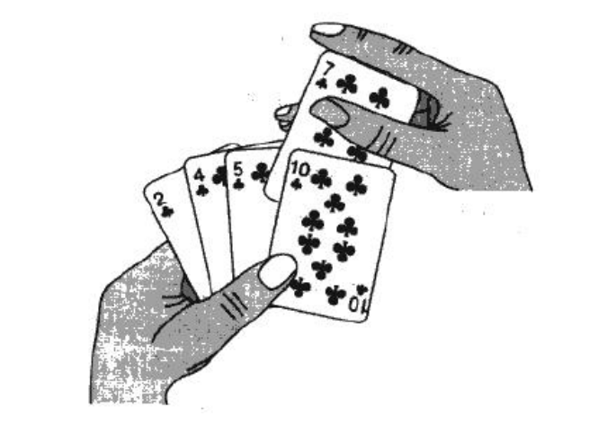
直接插入排序：
当插入第 i (i >= 1) 个元素时，前面的 array[0], array[1],…,array[i - 1] 已经排好序，此时用 array[i] 的排序码与 array[i - 1],array[i - 2],… 的排序码顺序进行比较，找到插入位置即将 array[i] 插入，原来位置上的元素顺序后移。
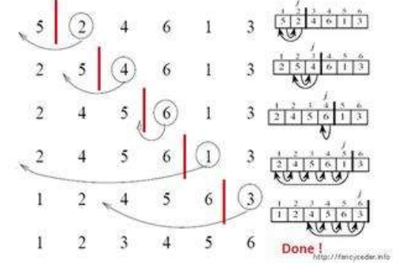
直接插入排序的特性总结：
元素集合越接近有序 ，直接插入排序算法的时间效率越高
时间复杂度：O(N^2)
空间复杂度：O(1) ，它是一种稳定的排序算法
稳定性：稳定
代码实现：
1 2 3 4 5 6 7 8 9 10 11 12 13 14 15 16 17 18 19 20 void InsertSort (int * arr, int n) { for (int i = 0 ; i < n - 1 ; ++i) { int end = i; int tmp = arr[end + 1 ]; while (end >= 0 ) { if (arr[end] > tmp) { arr[end + 1 ] = arr[end]; --end; } else break ; } arr[end + 1 ] = tmp; } }
2、希尔排序( 缩小增量排序 )🍪
希尔排序的由来：
希尔排序是基于插入排序的以下两点性质而提出改进方法的：
插入排序在对几乎已经排好序的数据操作时，效率高，即可以达到线性排序的效率。 但插入排序一般来说是低效的，因为插入排序每次只能将数据移动一位。
在以前排序算法不多的时候，科学家们想着如何优化时间复杂度…….
这时希尔想到 插入排序最坏的情况是O(N^2) 是在序列逆序的情况下，以目标排升序为例，最大的数字在最前面，那么要是将插入进行分组会不会交换的更快？答案是确实是快了！
因为将插入排序的思想进行分组插入后，如果分组越大，那么大的数字能更快的向后移动，而分组越小，大的数字就会越慢的向后移动。相反，分组越大，那么这个序列也越不接近有序，而分组越小，反而越接近有序。
所以希尔就根据这种特点，创造了缩小增量排序的基本思想！
简单来说：
希尔排序是按照不同步长对元素进行插入排序 ，当刚开始元素很无序的时候，步长最大，所以插入排序的元素个数很少，速度很快；当元素基本有序了，步长很小，插入排序对于有序的序列效率很高。 所以，希尔排序的时间复杂度 会比 O(n^2) 好一些。
实质就是一种分组插入的思想！
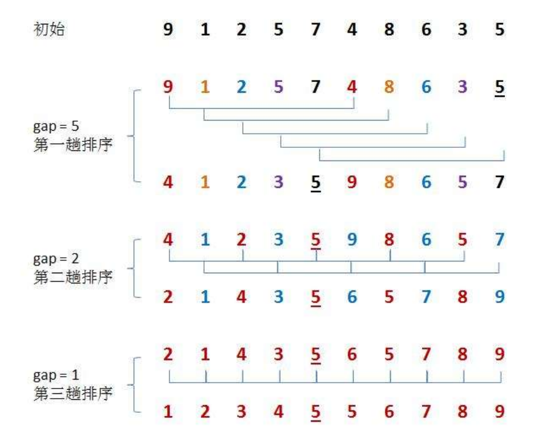
希尔排序的特性总结：
希尔排序是对直接插入排序的优化 。
当 gap > 1 时都是预排序，目的是让数组更接近于有序 。当 gap==1 时，数组已经接近有序的了，这样就会很快 ， 可看作 O(n) 。这样整体而言，可以达到优化的效果。我们实现后可以进行性能测试的对比。
希尔排序的时间复杂度不好计算，需要进行推导，推导出来平均时间复杂度： O(N^1.3—N^2）
稳定性：不稳定
总结：
gap 越大，大的和小的数可以更快 的挪到对应的方向去
gap 越大，越不接近有序
gap 越小，大的和小的数可以更慢 的挪到对应的方向去
gap 越小，就越接近有序
代码：
1 2 3 4 5 6 7 8 9 10 11 12 13 14 15 16 17 18 19 20 21 22 23 24 void ShellSort (int * arr, int n) { int gap = n; while (gap > 1 ) { gap = (gap / 3 ) + 1 ; for (int i = 0 ; i < n - gap; ++i) { int end = i; int tmp = arr[end + gap]; while (end >= 0 ) { if (arr[end] > tmp) { arr[end + gap] = arr[end]; end -= gap; } else break ; } arr[end + gap] = tmp; } } }
3、选择排序
基本思想：（采用双向选择，同时找大找小，进行一定程度的优化）
每一次从待排序的数据元素中选出最小和最大的两个元素，存放在序列的起始位置以及末尾，直到全部待排序的数据元素排完 。
直接选择排序:
在元素集合 array[i] — array[n-1] 中选择关键码最大与最小的数据元素
若它不是这组元素中的最后一个或者第一个元素，则将它与这组元素中的最后一个或第一个元素交换
在剩余的 array[i] — array[n-2]（array[i+1]—array[n-1]）集合中，重复上述步骤，直到集合剩余一个元素
直接选择排序的特性总结：
直接选择排序思考非常好理解，但是效率不是很好。实际中很少使用
时间复杂度：O(N^2)
空间复杂度：O(1)
稳定性：不稳定
代码：
1 2 3 4 5 6 7 8 9 10 11 12 13 14 15 16 17 18 19 20 21 22 23 24 25 26 27 28 void SelectSort (int * arr, int n) { int left = 0 ; int right = n - 1 ; while (left <= right) { int max = left; int min = right; for (int i = left; i < right + 1 ; ++i) { if (arr[i] < min) min = i if (arr[i] > max) max = i; } Swap(&arr[left], &arr[min]); if (left == max) max = min; Swap(&arr[right], &arr[max]); left++; right--; } }
4、 堆排序🧨
堆排序(Heapsort)是指利用堆这种数据结构所设计的一种排序算法，它是选择排序的一种。它是通过堆来进行选择数据。需要注意的是排升序要建大堆，排降序建小堆。 （具体的参考二叉树中的堆的笔记）
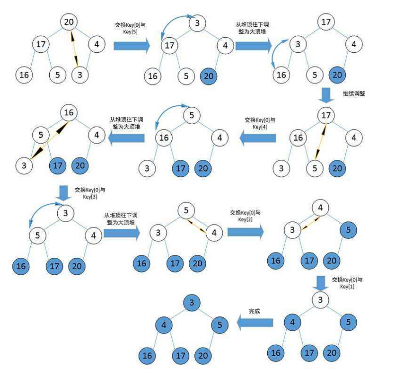
堆排序的特性总结：
堆排序使用堆来选数，效率就高了很多。
时间复杂度：O(N*logN) —>向下调整的 logN 层乘以一共 N 个节点
空间复杂度：O(1)
稳定性：不稳定
代码：
1 2 3 4 5 6 7 8 9 10 11 12 13 14 15 16 17 18 19 20 21 22 23 24 25 26 27 28 29 30 31 32 33 34 35 36 37 38 void AdjustDown (int * arr, int n, int root) { int parent = root; int child = parent * 2 + 1 ; while (child < n) { if (child + 1 < n && arr[child] < arr[child + 1 ]) { child += 1 ; } if (arr[parent] < arr[child]) { Swap(&arr[parent], &arr[child]); parent = child; child = parent * 2 + 1 ; } else break ; } } void HeapSort (int * arr, int n) { for (int i = (n-1 -1 ) / 2 ; i >= 0 ; --i) AdjustDown(arr, n, i); int end = n - 1 ; while (end > 0 ) { Swap(&arr[0 ], &arr[end]); AdjustDown(arr, end, 0 ); --end; } }
5、冒泡排序
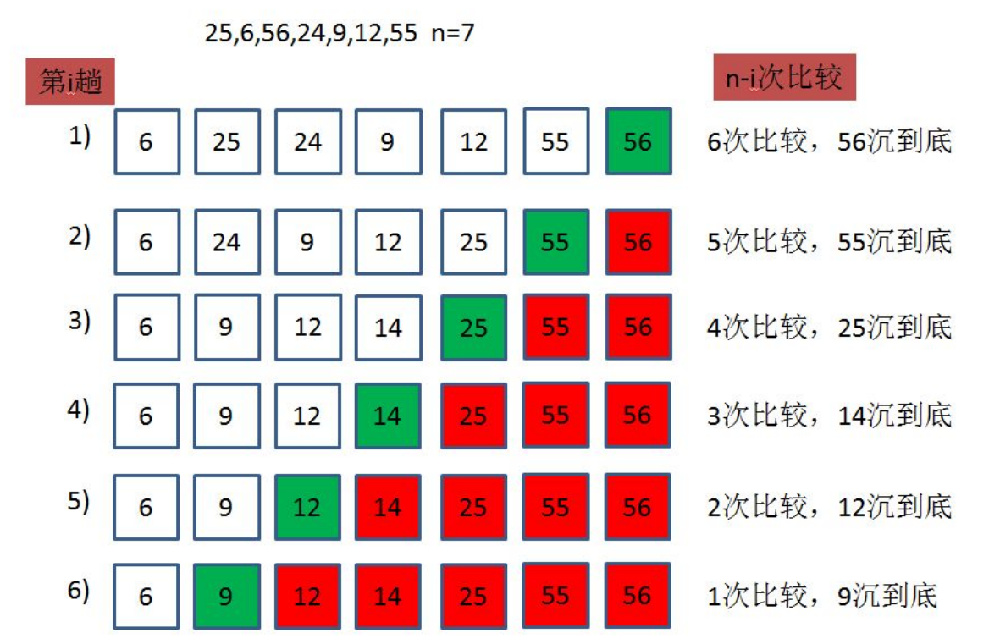
冒泡排序的特性总结：
冒泡排序是一种非常容易理解的排序
时间复杂度：O(N^2)
空间复杂度：O(1)
稳定性：稳定
代码：
1 2 3 4 5 6 7 8 9 10 11 12 13 14 15 16 17 void BubbleSort (int * arr, int n) { for (int i = 0 ; i < n - 1 ; ++i) { int flag = 1 ; for (int j = 0 ; j < n - 1 - i; ++j) { if (arr[j] > arr[j + 1 ]) { Swap(&arr[j], &arr[j + 1 ]); flag = 0 ; } } if (flag == 1 ) break ; } }
6、快速排序🎍 递归实现版本：
快速排序是Hoare于1962年提出的一种二叉树结构的交换排序方法 ，其基本思想为：任取待排序元素序列中的某元素作为基准值 ，按照该排序码将待排序集合分割成两子序列，左子序列中所有元素均小于基准值，右子序列中所有元素均大于基准值 ，然后最左右子序列重复该过程，直到所有元素都排列在相应位置上为止。
将区间按照基准值划分为左右两半部分的常见方式有：（会一种即可）
hoare版本
挖坑法
前后指针版本
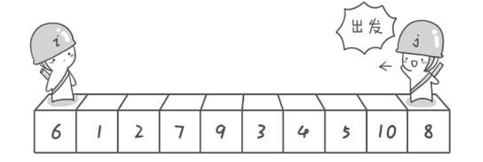
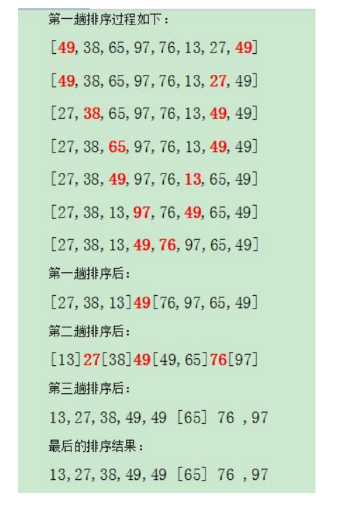
快速排序的特性总结：
快速排序整体的综合性能和使用场景都是比较好的，所以才敢叫快速 排序
时间复杂度：O(N*logN)
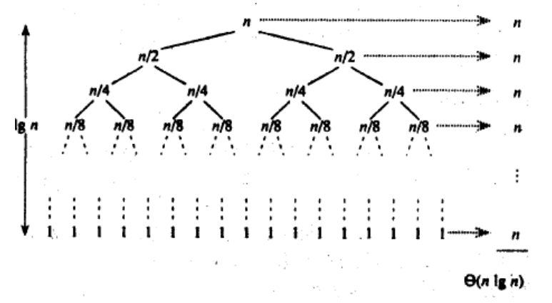
空间复杂度：O(logN) （递归树的深度）
稳定性：不稳定
在写出个版本之前，我们先写出快速排序的主函数，让各版本的快排作为子函数，降低耦合性 。
1 2 3 4 5 6 7 8 9 10 void QuickSort (int * arr, int left, int right) { if (left >= right) return ; int key = PartQuickSort(arr, left, right); QuickSort(arr, left, key -1 ); QuickSort(arr, key + 1 , right); }
而在快排的主函数中，我们又可以有以下两种优化手段：
三数取中法 取key递归到小的子区间 时，可以考虑使用插入排序
对于 三数取中 与 小区间优化 的方法 ：
优化的产生原因：
在理想情况 下，我们都希望每次更好都是二分 ，每行有 N 个数，共有 logN 行，所以时间复杂度为O(N*logN)
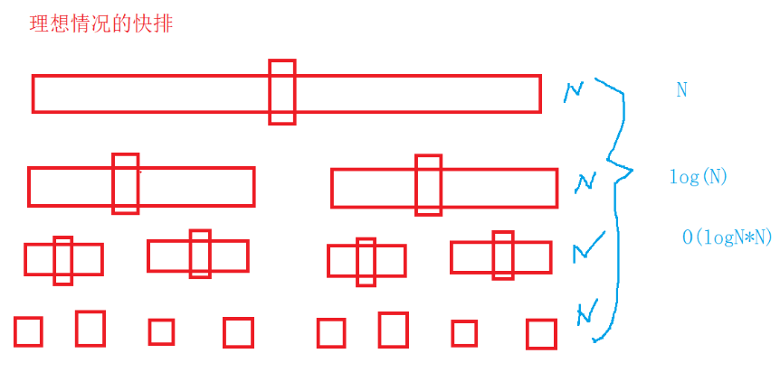
但是对于最坏的情况 ，就是这个数据序列本来就有序 ，共有 N 行，每行分别为 N、N-1、N-2、……、2、1 个，共 N*(N-1)/2 个。时间复杂度O(N^2)，效率非常低，但是我们可以发现，其实本来就不需要排多少个，居然会花了这么久的时间，所以就有了三数取中的方法， 避免了这种最坏的情况。
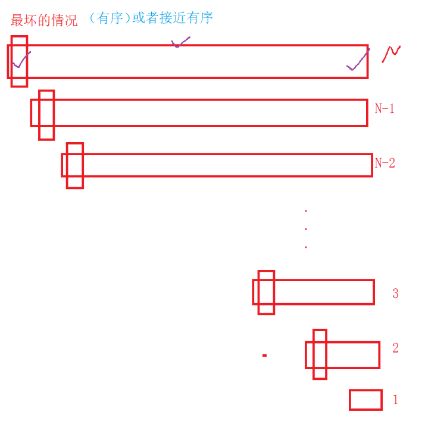
三数取中：
将每次所给的区间中的 最左边的值 、最右边的值、 最中间的值 ，挑大小为中间的那个 ，并将这个数与最左边的数交换位置 。（因为后面三个版本的排序都以最左边的值为key）。
代码：
1 2 3 4 5 6 7 8 9 10 11 12 13 14 15 16 17 18 19 20 21 22 int GetMidIndex (int * a, int left, int right) { int mid = left + ((right - left) >> 1 ); if (a[left] < a[mid]) { if (a[mid] < a[right]) return mid; else if (a[right] < a[left]) return left; else return right; } else { if (a[right] < a[mid]) return mid; else if (a[left] < a[right]) return left; else return right; }
小区间优化:
当要排的数据序列较大的时候，递归的层数就越深，特别是最后那几层或者几十层。但是我们仔细一想，其实在快排的前面的递归中，大部分区间的数据已经是解决有序了，所以这个时候我们可以考虑让剩下的几层或者几十层使用插入排序 ，进行优化，减少递归的深度，防止过多的开辟栈空间。 （效率其实是相差不大的，如今编译器对递归的优化很大，不亚于迭代）
所以将上述的两种优化放到快排的主函数中，代码如下：
1 2 3 4 5 6 7 8 9 10 11 12 13 14 15 16 17 18 19 20 21 22 23 void QuickSort (int * a, int left, int right) { if (left >= right) return ; if (right - left > 20 ) { int mid = GetMidIndex(a, left, right); Swap(&a[mid], &a[left]); int key = PartSort1(a, left, right); QuickSort(a, left, key - 1 ); QuickSort(a, key + 1 , right); } else { InsertSort(a + left, right - left + 1 ); } }
1、hoare版本
hoare版本 比较经典，就是 左右指针法 的思路。
步骤：
选出一个 key ， 一般选最左边的值为 key ，因为我们通过了三数取中的优化，不怕出现最坏的情况。
然后先让 right 从右边开始向左走，直到找到比 key处的值 要小的数 或者 遇到了 left 。
若 right 找到后，就让 left 向右走，直到找到比 key处的值 要大的数 或者 遇到了 right 。
交换 left 与 right 的值，然后一直循环，直到两个指针相遇。
最后将 key处的值 与 left处的值交换 ，将 left 作为返回值返回。
代码：
1 2 3 4 5 6 7 8 9 10 11 12 13 14 15 16 17 int hoareQuickSort (int * arr, int left, int right) { int key = left; while (left < right) { while (left < right && arr[right] >= arr[key]) right--; while (left < right && arr[left] <= arr[key]) left++; Swap(&arr[left], &arr[right]); } Swap(&arr[key], &arr[left]); return left; }
2、挖坑法
挖坑法顾名思义就是不断挖坑:smile:
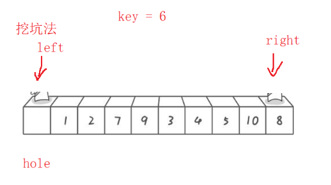
步骤：
选取最左值为 hole 值 ，并将最左侧的位置想象成一个坑 （默认已经三数取中优化）
right 从右边往左开始找比 hole 小的值 ，若找到了，则将 right处的值 赋给 left处 ，然后把 right处想象成新坑 ！left 从左往右开始找比 hoke 大的值 ，若找到了，则将 left处的值 赋给 right处 ，然后把 left处想象成新坑 ！直到 left 与 right 相遇，然后将 hole 填到最后的 left处 ，补上坑。
最后返回 left 即可。
代码：
1 2 3 4 5 6 7 8 9 10 11 12 13 14 15 16 17 18 19 20 21 22 int holeQuickSort (int * arr, int left, int right) { int hole = arr[left]; while (left < right) { while (left < right && a[right] >= hole) right--; a[left] = a[right]; while (left < right && a[left] <= hole) left++; a[right] = a[left]; } a[left] = hole; return left; }
3、前后指针法
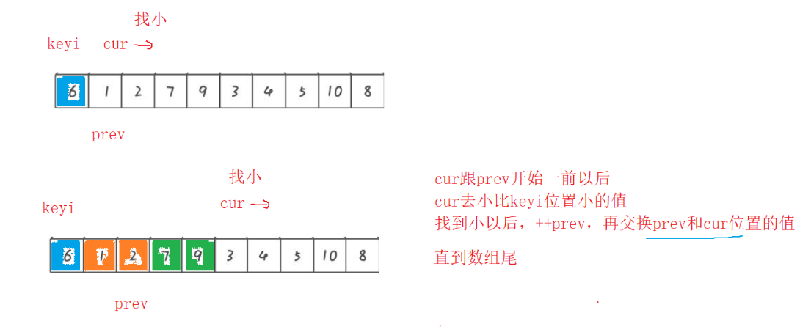
步骤:
取最左边为 key ，然后让 prev 与 cur 一前一后指向数据序列。（默认已经三数取中优化）
让 cur 先走，找比 key处小的值 ，直到出界。
若 cur 找到了小的，则先让 prev++ ，然后判断 cur处是否与 prev处 是相同的，若相同则无需交换，若不同再交换 cur 与 prev 处的数据 。
若 cur 走到出界了，则交换 prev 与 key 处的值 。
代码：
1 2 3 4 5 6 7 8 9 10 11 12 13 14 15 16 17 int back-and-forthQuickSort(int * arr, int left, int right){ int key = left; int prev = left; int cur = left + 1 ; while (cur <= right) { if (arr[cur] < a[key] && prev != cur) { prev++; Swap(&arr[prev], &arr[cur]); } cur++; } Swap(&arr[key], &arr[prev]); return prev; }
非递归实现版本（栈或队列实现，这里用栈）
思路：
用栈来存储每个子区间的下标。 left 和 right 入栈，然后进入循环，用 begin 和 end 分别标记每次 出栈的左右区间 。接着 对该区间进行排序 （可以用我们前面实现的三种方式的其中一种），并标注 key ，然后继续将新的 [ begin, key - 1 ] , [ key + 1, end ] 入栈 。
注：
用迭代主要是为了解决 递归栈溢出 的问题，而不是速度问题，因为现在的编译器优化已经做的很好了。
代码：
1 2 3 4 5 6 7 8 9 10 11 12 13 14 15 16 17 18 19 20 21 22 23 24 25 26 27 28 29 30 31 32 33 34 35 36 #include "stack.h" void QuickNonSort (int * arr, int left, int right) { int mid = GetMidIndex(a, left, right); Swap(&a[mid], &a[left]); Stack st; StackInit(&st); StackPush(&st, left); StackPush(&st, right); while (!StackEmpty(&st)) { int end = StackTop(&st); StackPop(&st); int begin = StackTop(&st); StackPop(&st); int key = holeQuickSort(arr, begin, end); if (begin < key - 1 ) { StackPush(&st, begin); StackPush(&st, key - 1 ); } if (key + 1 < end) { StackPush(&st, key + 1 ); StackPush(&st, end); } } StackDestroy(&st); }
7、归并排序🛺
基本思想：
归并排序（MERGE-SORT） 是建立在归并操作上的一种有效的排序算法,该算法是采用分治法（Divide and Conquer） 的一个非常典型的应用。将已有序的子序列合并，得到完全有序的序列 ；即先使每个子序列有序，再使子序列段间有序。若将两个有序表合并成一个有序表，称为二路归并 。 归并排序核心步骤：
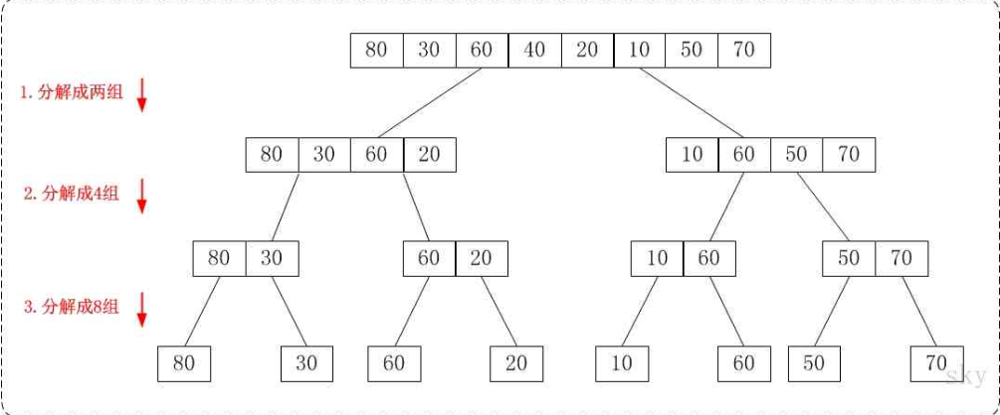
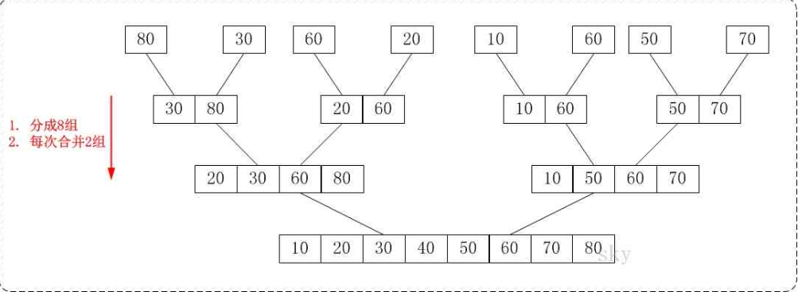
归并排序的特性总结：
归并的缺点在于需要O(N)的空间复杂度 ，归并排序的思考更多的是解决在磁盘中的外排序问题 。
时间复杂度：O(N*logN) （类似于二叉树，分解时共有 logN 行，每行合并的有 N 个，所以为 N*logN）
空间复杂度：O(N) （要开辟临时数组）
稳定性：稳定
归并排序递归实现
思路：
分解与合并过程类似二叉树的后序遍历 ，假设左区间有序了，右区间也有序了，那么一归并，整个数组就有序了。
代码：
1 2 3 4 5 6 7 8 9 10 11 12 13 14 15 16 17 18 19 20 21 22 23 24 25 26 27 28 29 30 31 32 33 34 35 36 37 38 39 40 41 42 43 44 45 46 47 48 49 50 void Merge (int * a, int begin1, int end1, int begin2, int end2, int * tmp) { int j = begin1; int i = begin1; while ((begin1 <= end1) && (begin2 <= end2)) { if (a[begin1] <= a[begin2]) tmp[i++] = a[begin1++]; else tmp[i++] = a[begin2++]; } while (begin1 <= end1) tmp[i++] = a[begin1++]; while (begin2 <= end2) tmp[i++] = a[begin2++]; for (j; j <= end2; j++) a[j] = tmp[j]; } void _MergeSort(int a[], int left, int right, int * tmp){ if (left >= right) return ; int mid = (left + right) >> 1 ; _MergeSort(a, left, mid, tmp); _MergeSort(a, mid + 1 , right, tmp); Merge(a, left, mid, mid + 1 , right, tmp); } void MergeSort (int * a, int n) { int * tmp = (int *)malloc (sizeof (int ) * n); if (tmp == NULL ) { printf ("malloc fail\n" ); exit (-1 ); } _MergeSort(a, 0 , n - 1 , tmp); free (tmp); }
归并排序非递归实现
思路： 迭代是不需要分解的。只需要控制好每次归并的区间，让它们从一一归并、二二归并、四四归并…….. 直到最后归并成一个完整的数组。
注意要点：
最后一个小组归并时，第一个小区间不够 gap 个，那么就不需要归并 最后一个小组归并时，第二个小区间不存在， 那么就不需要归并 最后一个小组归并时，第二个小区间存在，第二个区间不够 gap 个，那么只需要归并到第二个小区间的末尾即可
代码：
1 2 3 4 5 6 7 8 9 10 11 12 13 14 15 16 17 18 19 20 21 22 23 24 25 26 27 28 29 30 31 32 33 void MergeSortNonR (int * a, int n) { int * tmp = (int *)malloc (sizeof (int ) * n); if (tmp == NULL ) { printf ("malloc fail\n" ); exit (-1 ); } int gap = 1 ; while (gap < n) { for (int i = 0 ; i < n; i += gap * 2 ) { int begin1 = i, end1 = i + gap - 1 ; int begin2 = i + gap, end2 = i + 2 * gap - 1 ; if (begin2 >= n) break ; if (end2 >= n) end2 = n - 1 ; Merge(a, begin1, end1, begin2, end2, tmp); } gap *= 2 ; } free (tmp); }
8、非比较排序（计数排序）
思想：计数排序又称为鸽巢原理，是对哈希直接定址法的变形应用 。 操作步骤：
统计相同元素出现次数
根据统计的结果将序列回收到原来的序列中
计数排序的特性总结：
计数排序在数据范围集中时，效率很高 ，但是适用范围及场景有限 ，并且只适合整数，如果是浮点数、字符串等等就不行了。
时间复杂度：O(MAX(N,范围))
空间复杂度：O(范围)
稳定性：稳定
思考： 若最小的数是从一万开始的，那前面的空间都浪费了，咋办？
方法： 先求出原数组的 max 和 min ，然后开辟的数组只需要开辟 max - min + 1 个空间就行。减去 min ，在回收的时候记得 加上 min 。
代码：
1 2 3 4 5 6 7 8 9 10 11 12 13 14 15 16 17 18 19 20 21 22 23 24 25 26 27 28 29 30 31 32 33 34 35 36 37 38 39 40 41 void CountSort (int * a, int n) { int max = a[0 ]; int min = a[0 ]; for (int i = 0 ; i < n; i++) { if (a[i] > max) max = a[i]; if (a[i] < min) min = a[i]; } int range = max - min + 1 ; int * count = (int *)malloc (sizeof (int ) * range); if (count == NULL ) { printf ("malloc fail\n" ); exit (-1 ); } memset (count, 0 , sizeof (int ) * range); for (int i = 0 ; i < n; i++) { count[a[i] - min] += 1 ; } int j = 0 ; for (int i = 0 ; i < range; i++) { while (count[i]--) { a[j++] = i + min; } } free (count); }
9、基数排序 算法思想 排序算法是一种非比较 算法，其原理是将整数按每个位数分别比较 。它利用了桶的思想。
代码：（这里实现借助的是队列queue，比较方便）
1 2 3 4 5 6 7 8 9 10 11 12 13 14 15 16 17 18 19 20 21 22 23 24 25 26 27 28 29 30 31 32 33 34 35 36 37 38 39 40 41 42 43 44 45 46 47 48 49 50 51 52 53 54 55 56 57 58 59 60 61 62 63 64 65 66 67 68 69 70 71 72 73 74 75 76 77 78 79 80 81 82 #include <iostream> #include <vector> #include <queue> using namespace std;const int MAX_COUNT = 3 ; const int MAX_RADIX = 10 ; queue<int > q[MAX_RADIX]; int GetKey (int n, int k) int key = 0 ; while (k--) { key = n % 10 ; n /= 10 ; } return key; } void Distribute (vector<int >& v, int left, int right, int k) for (int i = left; i < right; ++i) { int key = GetKey (v[i], k); q[key].push (v[i]); } } void Collect (vector<int >& v) int i = 0 ; for (int k = 0 ; k < MAX_RADIX; ++k) { while (!q[k].empty ()) { v[i++] = q[k].front (); q[k].pop (); } } } void radixsort (vector<int >& v, int left, int right) if (v.size () == 0 ) return ; for (int k = 1 ; k <= MAX_COUNT; ++k) { Distribute (v, left, right, k); Collect (v); } } int main () int arr[] = { 278 , 109 , 63 , 930 , 589 , 184 , 505 , 269 , 8 , 83 }; vector<int > v (arr, arr + sizeof (arr) / sizeof (arr[0 ])) ; auto it = v.begin (); while (it != v.end ()) { cout << *it << " " ; ++it; } cout << endl; radixsort (v, 0 , v.size ()); it = v.begin (); while (it != v.end ()) { cout << *it << " " ; ++it; } cout << endl; return 0 ; }
Ⅲ、排序算法复杂度以及稳定性的分析
基数排序也是稳定的！
稳定性应用： 考试交卷之后，自动评卷拿到成绩，成绩按交卷顺序填到数组中，然后我们对数组进行排序，进行排名。要求：若分数相同，先交卷的排在前面。所以用了不稳定的排序， 可能会改变相对顺序。


 微信/wechat
微信/wechat 支付宝/alipay
支付宝/alipay